La idea, en un minuto
Un gestor de contraseñas guarda todas tus contraseñas en un único archivo cifrado, la bóveda. La abres con una sola contraseña, la contraseña maestra. Como ya no tienes que recordar las demás, cada una puede ser larga, aleatoria y distinta.
- SecretBroker guarda la bóveda en tu ordenador. No hay que crear ninguna cuenta y no se sube nada.
- Una credencial es como llama la app a cualquier cosa que guarda: el acceso a una web, una API key, el acceso a un servidor.
- Si no usas herramientas de IA, no hagas caso de lo que hable de «la IA». Cuando la instalación te ofrezca conectar una, elige Ahora no.
Instalarlo
Descarga el instalador de tu sistema en la sección de descargas. SecretBroker funciona en Windows 10 y 11 y en Ubuntu 22.04, 24.04 y 26.04. La versión para macOS es una vista previa.
Windows
- Descarga
SecretBroker-Setup-<versión>.exe. Puede que el navegador te diga que el archivo no se descarga habitualmente; elige conservarlo. - Abre el archivo. Hoy por hoy, Windows se detiene aquí con una ventana azul:
Lo que muestra Windows
Windows protegió su PC
Más información
El texto dice que SmartScreen ha impedido el inicio de una aplicación desconocida. Pulsa Más información. La ventana muestra entonces el nombre del archivo, indica que el editor es desconocido y aparece un botón nuevo: pulsa Ejecutar de todas formas.
- Windows te pregunta si permites que el programa haga cambios en el equipo, otra vez con un editor desconocido. Responde Sí.
- El instalador se abre en el idioma de Windows. Síguelo y termina con Abrir SecretBroker. No necesita conexión a internet.
Por qué pide permiso de administrador: el instalador crea una cuenta de Windows oculta llamada SecretBroker, que no puede iniciar sesión, y una carpeta que solo esa cuenta puede leer. Eso es lo que mantiene a tus otros programas lejos de la bóveda. La app se instala en C:\Program Files\SecretBroker, arranca con Windows y se queda junto al reloj.
Ubuntu
- Descarga
secretbroker_<versión>_amd64.deb. - Haz doble clic en él y elige Instalar en el instalador de software. Te pide la contraseña una vez. Si el doble clic no te ofrece instalarlo, abre una terminal en la carpeta de descargas y ejecuta
sudo apt install ./secretbroker_*_amd64.deb. - Abre SecretBroker desde la cuadrícula de aplicaciones. El icono junto al reloj necesita la extensión AppIndicator, que Ubuntu trae activada.
El paquete no viene de los repositorios de Ubuntu, así que Ubuntu puede recordarte que es software de terceros. Todavía no hay repositorio apt: la app se actualiza sola y te pide la contraseña al hacerlo.
macOS (vista previa)
- Descarga el paquete de tu Mac:
…-macos-arm64.pkgpara Apple silicon (M1 y posteriores) o…-macos-x86_64.pkgpara Intel. El menú Apple › Acerca de este Mac te dice cuál tienes. - Ábrelo. macOS se niega y dice que no se puede verificar, porque aún no está firmado con un Developer ID de Apple.
- Haz clic derecho (o Control-clic) en el archivo y elige Abrir. Si por ahí no te deja, que es lo que ocurre en las versiones recientes de macOS, abre Ajustes del Sistema › Privacidad y seguridad, baja hasta Seguridad y pulsa Abrir igualmente.
- Sigue el instalador. Te pide la contraseña de un administrador.
Hasta que exista la versión firmada, desbloqueas con la contraseña del Mac o con la maestra una vez por sesión; después, aprobar es un clic.
Actualizar y desinstalar
Cuando hay una versión nueva, la barra lateral muestra Actualizar a <versión>. Púlsalo: el instalador se descarga de GitHub y solo se instala si lleva la firma del proyecto. Tu bóveda y tus ajustes se conservan y la app se reabre sola. Ajustes › Actualizaciones › Buscar ahora lo comprueba cuando quieras.
Para desinstalar en Windows, usa «Aplicaciones instaladas». El desinstalador pregunta si quieres borrar también la bóveda; si no dices que sí, se conserva. En Ubuntu, quitar el paquete conserva las bóvedas y purgarlo las borra.
Crear tu bóveda
La primera vez que abres SecretBroker te lleva por cuatro pantallas cortas.
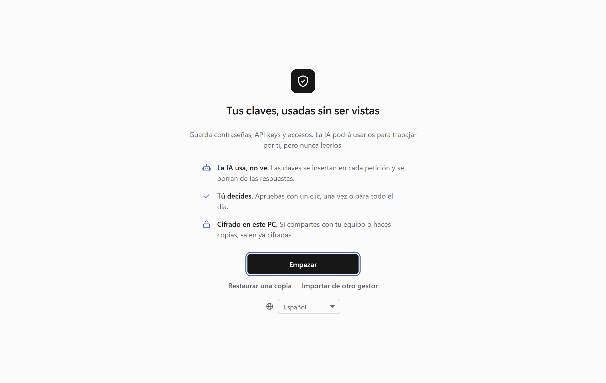
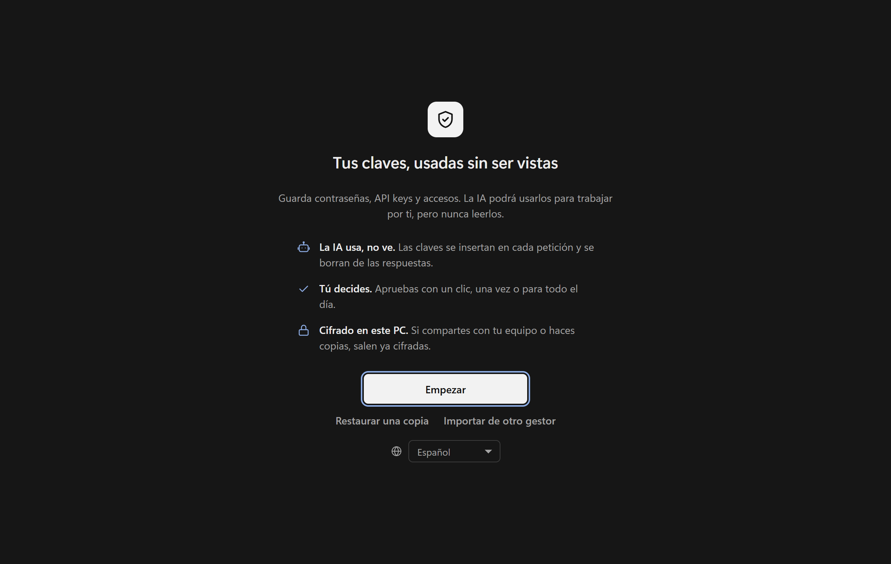
- En la primera pantalla, pulsa Empezar. El idioma se cambia abajo. Si vienes de otro ordenador, aquí está también Restaurar una copia.
- Elige una contraseña maestra: escríbela dos veces (12 caracteres o más) y pulsa Crear bóveda. El apartado siguiente te ayuda a elegirla.
- ¿Cómo quieres abrirla cada día? Elige una opción y pulsa Continuar:
- Windows Hello (PIN, huella o cara), si tu PC lo tiene. Te lo pide al abrir la bóveda y al ver o copiar una contraseña.
- Abrir con mi sesión de Windows. La bóveda se abre al entrar en Windows y se cierra al bloquearlo. Es cómodo, con un coste que la app dice sin rodeos: te protege de los errores de la IA, no de alguien que use tu sesión de Windows, porque cualquier programa tuyo podría abrirla.
- Escribir la contraseña maestra cada vez. Lo más estricto, y lo más pesado.
- Conecta tu IA es el último paso. Si no usas herramientas de IA, pulsa Ahora no. Si las usas, mira la guía para desarrolladores.
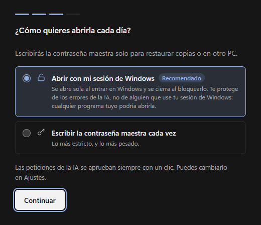
Elegir una buena contraseña maestra
Es la contraseña que protege a todas las demás, y la única que nadie puede restablecer por ti desde fuera de tu PC.
- Que sea larga. La app pide al menos 12 caracteres. Cuatro o cinco palabras sin relación entre sí forman una frase fácil de recordar y difícil de adivinar.
- No la uses en ningún otro sitio.
- Apúntala en papel y guarda el papel en casa. Con Windows Hello o con la sesión de Windows la escribirás tan pocas veces que es fácil olvidarla, y la necesitas para restaurar una copia o pasarte a otro PC.
Para cambiarla más adelante: Ajustes › Seguridad › Contraseña maestra › Cambiar.
Añadir tu primera contraseña
- En Credenciales, pulsa Nueva (o Ctrl+N) y elige Web o servicio.
- Rellena Nombre, Dirección web, Usuario o e-mail y Contraseña. Si estás creando la cuenta en ese momento, Generar te escribe una contraseña fuerte.
- Pulsa Guardar. Puede que la app te pida confirmar que eres tú.
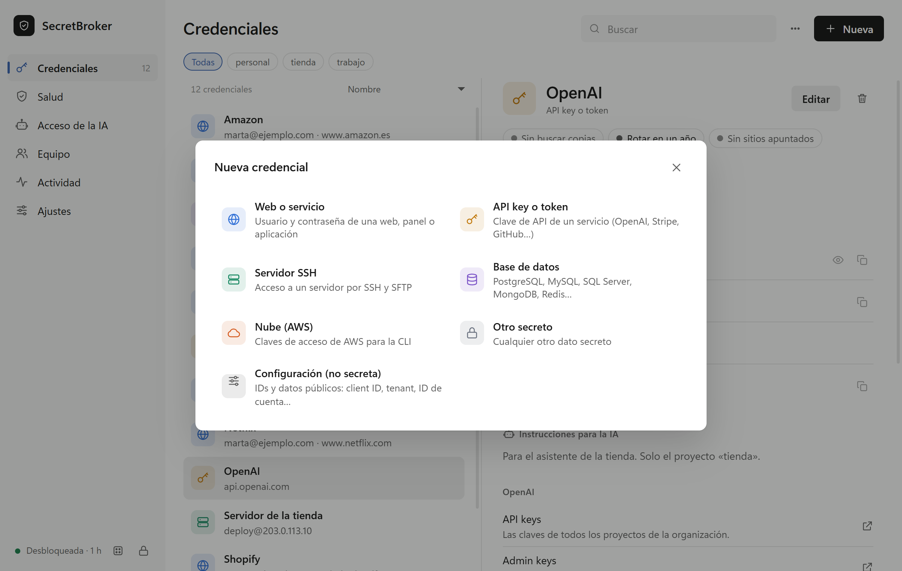
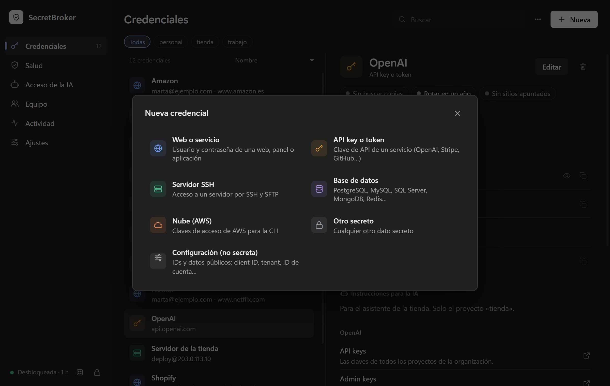
Tu acceso ya está en la lista. El ojo muestra la contraseña y los dos cuadrados la copian; el portapapeles se borra a los 30 segundos. Las Etiquetas agrupan credenciales, por ejemplo por proyecto, y Ctrl+F busca.
El Generador de contraseñas también va por libre, al pie de la barra lateral o con Ctrl+G: una contraseña Aleatoria de 12 a 128 caracteres o una Frase de palabras cortas.
Importar de un navegador o de otro gestor
SecretBroker lee lo que exportan Chrome, Edge, Firefox, Bitwarden, 1Password, KeePass y KeePassXC. Nunca lee por su cuenta los datos de otro programa: tú exportas un archivo allí y lo eliges aquí.
- Abre la importación: con la bóveda vacía, Importar de otro gestor; más adelante, el botón ⋯ junto a Nueva, o Ajustes › Importar y exportar.
- Elige de dónde vienes. El diálogo te dice dónde está la exportación en ese programa. Por ejemplo:
- Chrome: Configuración → Autocompletar y contraseñas → Gestor de contraseñas de Google → Configuración → Exportar contraseñas → Descargar archivo.
- Edge: Configuración → Perfiles → Contraseñas → … (Más acciones) → Exportar contraseñas.
- Bitwarden: exporta en
.json, no en «.json (Encrypted)». Trae carpetas, notas y códigos 2FA; también vale.csv. - 1Password: exporta en CSV. El formato
.1puxno se puede leer.
- Pulsa Elegir el archivo…. Primero ves la lista, solo los nombres: las que ya tienes salen marcadas y tú decides cuáles traer. Después, Importar.
- Al terminar, la app te recuerda que el archivo exportado tiene todas tus contraseñas sin cifrar. Pulsa Borrar el archivo, y borra también las copias que queden en Descargas, en el correo o en la nube.
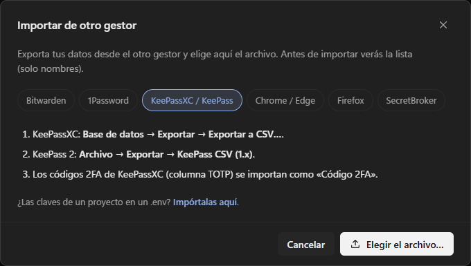
Las carpetas pasan a ser etiquetas, y las notas y los campos extra van a Notas privadas. Después, Ver la salud te enseña las contraseñas débiles o repetidas que traías.
Rellenar contraseñas en el navegador
La extensión del navegador rellena el usuario, la contraseña y el código 2FA en Chrome, Edge, Brave y Firefox. Aún no está en las tiendas de extensiones, así que por ahora se carga desde la carpeta de la app. Son dos minutos y no hace falta terminal.
- En la app, abre Ajustes › Navegador y pulsa Instalar la extensión. Elige tu navegador en la parte de arriba del diálogo.
- Chrome, Edge, Brave: pulsa Abrir extensiones de Chrome (o de tu navegador), activa Modo de desarrollador, pulsa Cargar descomprimida y elige la carpeta de la extensión de SecretBroker. El diálogo muestra la carpeta, con Copiar ruta y Mostrar.
Firefox: pulsa Abrir Firefox, después Cargar complemento temporal… y elige el archivo
manifest.jsonde esa carpeta. En el botón de extensiones de la barra, permite que SecretBroker acceda a todas las webs. - Fija el icono de SecretBroker en la barra, ábrelo y pulsa Conectar. La app pregunta ¿Conectar Chrome? y muestra un código de seis cifras: comprueba que la extensión muestra el mismo y pulsa Conectar. Si no acabas de pulsar Conectar en el navegador, elige Rechazar.
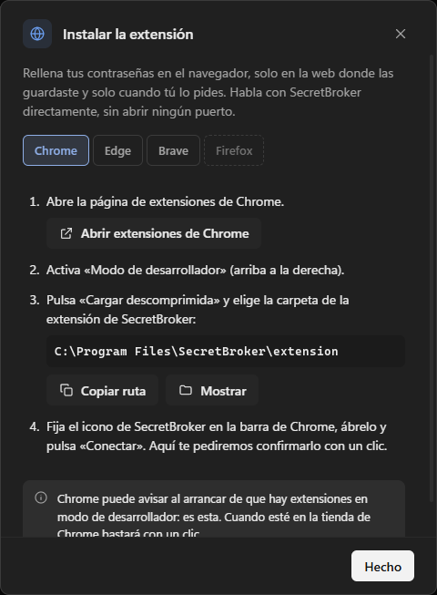
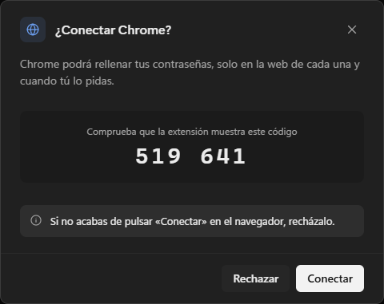
A partir de ahí, en una página de inicio de sesión, pulsa el botón de SecretBroker dentro del campo o Alt+Mayús+L. Ctrl+Mayús+Y abre la extensión. También te ofrece guardar los accesos nuevos y las contraseñas que cambies.
- Un acceso solo se ofrece en la web donde se guardó. Una dirección parecida, el truco habitual de los correos de phishing, no recibe nada.
- No se rellena nada hasta que tú lo pides.
- Chrome, Edge y Brave pueden avisar al arrancar de que hay extensiones en modo de desarrollador: es esta. Firefox olvida los complementos temporales al cerrarse, así que hasta que la extensión esté en addons.mozilla.org hay que cargarla cada vez.
Códigos de dos pasos (2FA)
Muchas webs ofrecen la verificación en dos pasos con una «app de autenticación»: además de la contraseña escribes un código de seis cifras que cambia cada 30 segundos. SecretBroker puede ser esa app.
- En la web, activa la verificación en dos pasos y elige la opción de app de autenticación. La web muestra un código QR y, debajo o tras un enlace del tipo «¿no puedes escanearlo?», una clave de letras y números.
- Copia esa clave. En SecretBroker, abre el acceso, pulsa Editar y pégala en Código 2FA (TOTP). Pulsa Guardar.
- El acceso muestra ya el código del momento, con Mostrar el código y Copiar el código. Escríbelo en la web para terminar de activarlo.


Guarda en las Notas privadas del acceso los códigos de recuperación que te dé la web. Algo que conviene pensar: una bóveda que guarda la contraseña y el código guarda los dos pasos. Para las pocas cuentas más importantes quizá prefieras tener el código en el móvil.
Copias de seguridad, restaurar y cambiar de PC
Tu bóveda solo existe en tu ordenador. Sin una copia, un disco estropeado se lleva todas las contraseñas.
Activa la copia diaria
Abre Ajustes › Copia de seguridad y pulsa Activar junto a Copia diaria automática. Cada día se copia la bóveda cifrada a una carpeta: OneDrive si lo tienes, para que la copia esté fuera del PC, y si no, Documentos. Cambiar carpeta elige otra, como un USB. Se guardan las 10 últimas, y Hacer copia ahora hace una al momento.
Restaurar una copia
Ajustes › Copia de seguridad › Restaurar… sustituye la bóveda por una copia. Necesitas la contraseña maestra que tenía la bóveda cuando se hizo esa copia. La bóveda actual se guarda aparte, por si acaso.
Pasarte a otro PC
Ajustes › Cambiar de PC › Pasar a otro PC › Ver los pasos te guía:
- Guardar copia… escribe tu bóveda en un archivo cifrado. Llévalo en un USB o déjalo en una carpeta de tu nube.
- En el PC nuevo, instala SecretBroker. En la primera pantalla elige Restaurar una copia, abre ese archivo y escribe tu contraseña maestra.
- Cuando todo funcione, desinstala SecretBroker del PC antiguo si no vas a usarlo más.
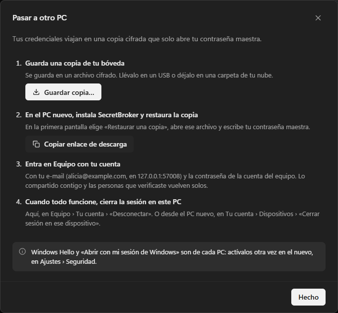
Windows Hello y «Abrir con mi sesión de Windows» son de cada PC: actívalos otra vez en el nuevo, en Ajustes › Seguridad.
Exportar, que es otra cosa
Ajustes › Importar y exportar › Exportar… escribe tus credenciales en un archivo para otra herramienta: Cifrada, con la contraseña que elijas, o Sin cifrar (CSV) o (JSON), que leen Bitwarden, 1Password, KeePassXC y los navegadores. Una exportación sin cifrar tiene todas las contraseñas a la vista: impórtala enseguida y bórrala.
Si olvidas la contraseña maestra
Lo que puedes hacer depende de dónde esté tu bóveda.
En el ordenador donde está la bóveda
- En la pantalla de bloqueo, pulsa ¿Has olvidado la contraseña maestra?
- El diálogo Recuperar el acceso te deja entrar con Windows Hello o con tu Contraseña de Windows (en Ubuntu y macOS, la contraseña del sistema).
- Una vez dentro, la app te pide elegir una contraseña maestra nueva.
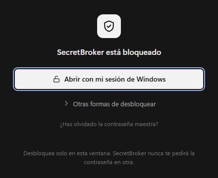
Si la bóveda ya está abierta, Ajustes › Seguridad › Contraseña maestra › Cambiar hace lo mismo tras confirmar con Windows.
Esto solo funciona en ese PC, y tiene una consecuencia que conviene saber: en ese PC, tu bóveda es tan segura como tu inicio de sesión de Windows. Usa una buena contraseña o un buen PIN de Windows.
Desde una copia, o en otro ordenador
Una copia solo se abre con la contraseña maestra que tenía la bóveda cuando se hizo. Si el ordenador se pierde o se rompe y no recuerdas esa contraseña, nadie puede abrir la copia: ni tú, ni el proyecto, que nunca tiene tu bóveda ni tu contraseña. Por eso importa el papel.
Bloquear y desbloquear
- Bloquear ahora: Ctrl+L, el candado al pie de la barra lateral, o Bloquear en el menú del icono junto al reloj.
- Bloqueo automático (Ajustes › Seguridad): tras 15 minutos, 30 minutos, 1 hora o 4 horas sin uso, o nunca.
- Windows Hello (Ajustes › Seguridad): Activar para desbloquear y mostrar contraseñas con tu PIN, huella o cara. Ubuntu no tiene equivalente; en Mac, Touch ID llegará con la versión firmada.
- Abrir con mi sesión de Windows (Ajustes › Seguridad): la bóveda sigue a tu sesión de Windows. Recuerda lo que significa: cualquier persona, o cualquier programa, que use tu sesión desbloqueada puede abrirla.
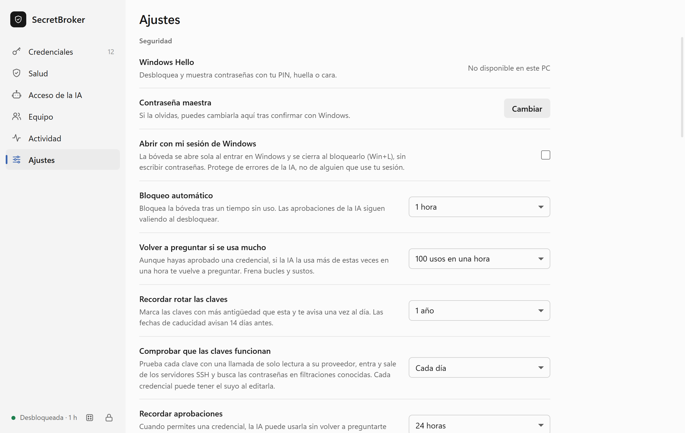
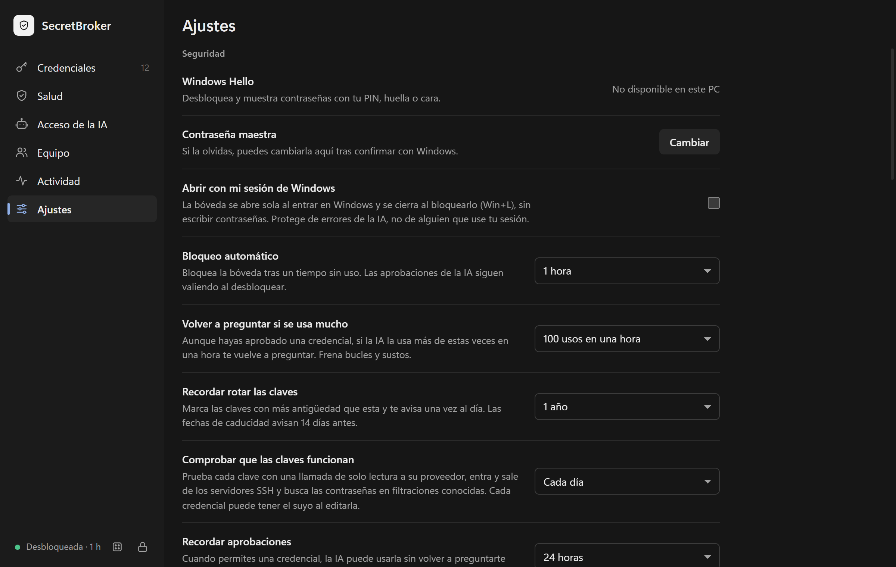
Cerrar la ventana no cierra SecretBroker: se queda junto al reloj, donde están Abrir SecretBroker, Bloquear y Salir. Ajustes › Aplicación › Arrancar con Windows decide si arranca solo.
Revisar la salud de tus contraseñas
Salud, en la barra lateral, da una puntuación de 0 a 100 y la lista de lo que conviene arreglar primero: contraseñas débiles, repetidas en varios sitios, antiguas, caducadas o que aparecen en filtraciones conocidas. Revisar ahora la pone al día.

Cada línea tiene Rotar con ayuda: la app genera una contraseña nueva, te la copia para que la pegues en la página de «cambiar contraseña» de la web y la guarda cuando confirmas que la web la ha aceptado.
Para saber si una contraseña está en una filtración conocida, la app pregunta al servicio Have I Been Pwned de una forma que no la revela: de tu PC solo salen los cinco primeros caracteres de una huella de la contraseña. La página de privacidad da los detalles.
Cuando algo va mal
«No se puede conectar con el servicio»
El servicio de SecretBroker arranca con el ordenador. Si acabas de instalar, espera unos segundos o reinicia el PC.
He cerrado la ventana y no encuentro la app
Sigue en marcha junto al reloj. Pulsa su icono y elige Abrir SecretBroker. En Ubuntu el icono necesita la extensión AppIndicator.
La extensión no me ofrece mi acceso
- ¿Está la bóveda desbloqueada? La extensión solo puede rellenar mientras lo está.
- Ajustes › Navegador debe decir que el navegador está Conectado. Si no, abre la extensión y pulsa Conectar otra vez. En Firefox hay que cargar el complemento de nuevo tras cada reinicio.
- Puede que el acceso esté guardado con otra dirección. Edítalo y revisa Dirección web; Otras direcciones añade más webs para la misma cuenta.
La importación no reconoce mi archivo
Exporta de nuevo en CSV o, desde Bitwarden, en .json sin cifrar. Las exportaciones cifradas de Bitwarden y el .1pux de 1Password no se pueden leer.
Una actualización no se instala
Descarga el instalador actual en esta web y ejecútalo encima del que tienes. Tu bóveda y tus ajustes se conservan.
Pedir ayuda
- Dudas y fallos: abre una incidencia en GitHub. Las incidencias son públicas: no pegues nunca una contraseña ni una clave, y revisa las capturas antes de adjuntarlas. Di qué versión tienes; está al final de Ajustes.
- Problemas de seguridad: por favor, no abras una incidencia pública. Avisa en privado desde la pestaña Security del repositorio, Report a vulnerability. La política de seguridad (en inglés) dice qué incluir y cuándo esperar respuesta.
Última actualización: 18 de noviembre de 2026